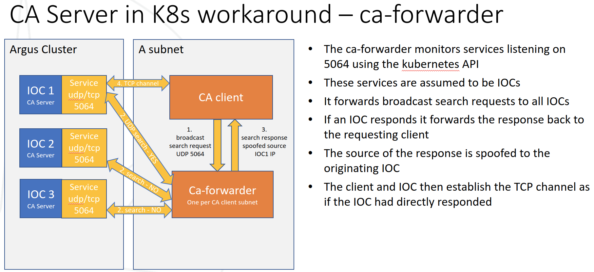
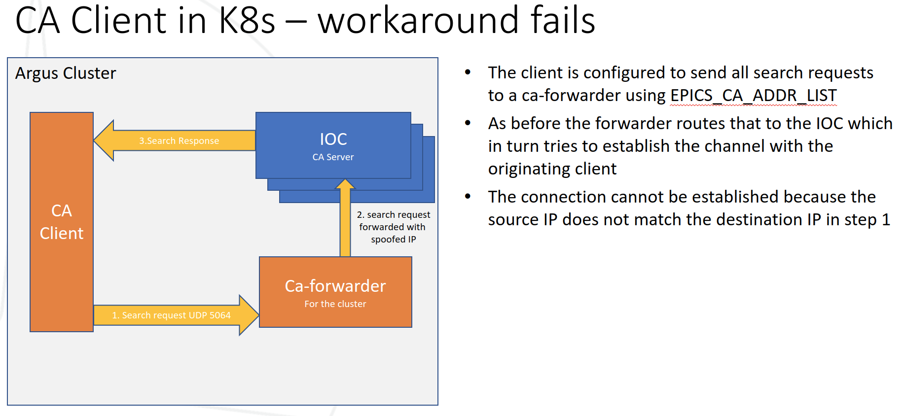

EPICS Network Protocols in Containers#
When EPICS IOCs run in containers, their Channel Access (CA) and PV Access (PVA) traffic must still reach clients. Both protocols predate containers and make assumptions - UDP broadcast for discovery, freely negotiated ephemeral ports - that container networks do not always honour. This page explains the options and why epics-containers makes the choices it does.
Approaches to Network Protocols#
There are three ways to connect clients and servers:
Run IOC containers in host network:
The container uses the host’s network stack, so it looks identical to a native IOC running on that machine.
This is the approach epics-containers uses for IOCs in Kubernetes - see Running IOCs in Kubernetes for why.
It reduces isolation between container and host, so additional security measures may be needed.
Use port mapping:
Used by the developer containers in example-services.
The container runs in a container network and the required ports are mapped from the host. VS Code can do this automatically when it detects a process binding to a port.
Good for local development and tutorials: the mapping can be bound to localhost only, isolating PVs to the developer’s machine.
Run clients in the same container network as the IOCs:
Also used by example-services, which runs a CA and a PVA gateway alongside the IOCs.
The gateways reach the IOCs over any ports and UDP broadcast, and use port mapping to publish to their own clients.
A GUI client such as Phoebus may still struggle here, as X11 forwarding into a rootless container network is awkward.
Note
DLS users: managed Kubernetes beamlines run IOCs in host network for exactly the reasons set out below. See the DLS developer guide.
General Observations#
Host network, or sharing one container network between client and server, is compatible with both CA and PVA - and with UDP broadcast on podman networks.
Most Kubernetes CNIs do not pass broadcast between pods. Broadcast within a pod would work (equivalent to “same container network”), but that would make managing large numbers of IOCs a manual chore.
Channel Access#
Specification: https://docs.epics-controls.org/en/latest/internal/ca_protocol.html.
Experiments with CA servers in containers show:
Port mapping works for CA, including UDP broadcast.
Broadcast or unicast only works if the container does not remap the port to a different number inside the container.
EPICS_CA_NAME_SERVERSalways works with port mapping.
PV Access#
Specification: https://docs.epics-controls.org/en/latest/pv-access/Protocol-Messages.html.
Experiments with PVA servers in containers show:
Port mapping over UDP always fails: a PVA server opens a new random port per circuit, which is not NAT friendly.
EPICS_PVA_NAME_SERVERSalways works with port mapping, but both client and server must be PVXS.To talk to a non-PVXS server, run a
pvagwin the same container network.
Test Scripts#
The following scripts exercise the assertions above against a demo IOC:
#!/bin/bash
# demo of exposing Channel Access outside of a container
# caRepeater:
#
# note that these experiments ignore the CA_REPEATER_PORT. Typically
# IOCs in containers should also expose 5065 for the CA repeater.
# Because only the first IOC needs to start caRepeater, and that one process
# binds to 5065, it turns out that caRepeater continues to work as expected.
# (caRepeater can go down if the IOC that started it goes down, but it will get
# restarted by the next IOC startup.)
cmd='-dit --rm --name test ghcr.io/epics-containers/ioc-template-example-runtime:4.4.6'
check () {
podman run $args $env $ports $cmd > /dev/null
podman logs -f test | grep -q -m 1 "iocInit"
if caget EXAMPLE:IBEK:SUM &>/dev/null; then
echo "CA Success"
else
echo "CA Failure"
fi
podman stop test &> /dev/null; sleep 1
echo ---
}
(
echo no ports, network host, broadcast
ports=
args="--network host"
check
# the default sledgehammer approach works like native IOCs
)
# I guess broadcasts don't go to the loopback
(
echo 5064, broadcast: FAILURE
ports="-p 5064:5064 -p 5064:5064/udp"
check
)
(
echo 5064 no UDP, broadcast: FAILURE
ports="-p 5064:5064"
check
)
(
echo 5064, unicast
export EPICS_CA_ADDR_LIST="localhost"
ports="-p 5064:5064 -p 5064:5064/udp"
check
)
(
echo 5064 no UDP, unicast: FAILURE
export EPICS_CA_ADDR_LIST="localhost"
ports="-p 5064:5064"
check
# EPICS_CA_ADDR_LIST uses UDP Unicast
)
# NOTE: binding to localhost means that only the local host clients
# can see the IOC. This is useful for testing without exposing the IOC
# on the whole subnet.
(
echo 5064, broadcast, localhost: FAILURE
ports="-p 127.0.0.1:5064:5064 -p 127.0.0.1:5064:5064/udp"
check
# why does this fail? - I guess broadcasts do not go to localhost
)
(
echo 5064, unicast, localhost
export EPICS_CA_ADDR_LIST="localhost"
ports="-p 127.0.0.1:5064:5064 -p 127.0.0.1:5064:5064/udp"
check
)
(
echo 8064, broadcast
export EPICS_CA_SERVER_PORT=8064
env="-e EPICS_CA_SERVER_PORT=8064"
ports="-p 8064:8064 -p 8064:8064/udp"
check
)
(
echo 8064, unicast, localhost
export EPICS_CA_ADDR_LIST="localhost" EPICS_CA_SERVER_PORT=8064
env="-e EPICS_CA_SERVER_PORT=8064"
ports="-p 127.0.0.1:8064:8064 -p 127.0.0.1:8064:8064/udp"
check
)
# remapping the ports does not work!
(
echo 8064:5064, broadcast: FAILURE
export EPICS_CA_SERVER_PORT=8064
ports="-p 8064:5064 -p 8064:5064/udp"
check
)
(
echo 8064:5064, unicast, localhost: FAILURE
export EPICS_CA_ADDR_LIST="localhost" EPICS_CA_SERVER_PORT=8064
ports="-p 127.0.0.1:8064:5064 -p 127.0.0.1:8064:5064/udp"
check
)
(
echo 5064 no UDP, NAME_SERVER, localhost
export EPICS_CA_NAME_SERVERS="localhost:5064"
ports="-p 127.0.0.1:5064:5064"
check
)
(
echo 8064:5064 no UDP, NAME_SERVER, localhost
export EPICS_CA_NAME_SERVERS="localhost:8064"
ports="-p 127.0.0.1:8064:5064"
check
)
#!/bin/bash
# demo of exposing PV Access outside of a container
# requires a venv with p4p installed
pvget='
from p4p.client.thread import Context
Context("pva").get("EXAMPLE:IBEK:SUM", timeout=0.5)
'
cmd='-dit --rm --name test ghcr.io/epics-containers/ioc-template-example-runtime:4.4.6'
check () {
podman run $args $env $ports $cmd > /dev/null
podman logs -f test | grep -q -m 1 "iocInit"
if python -c "$pvget" 2>/dev/null; then
echo "PVA Success"
else
echo "PVA Failure"
fi
podman stop test &> /dev/null
echo ---
}
(
echo no ports, network host, broadcast
ports=
args="--network host"
check
# the default sledgehammer approach works like native IOCs
)
# PVA fails for broadcast and unicast because the client creates a new random
# port for the server to make the TCP circuit but that is not NAT friendly.
(
echo 5075, broadcast: FAILURE
ports="-p 5075:5075 -p 5075:5075/udp"
check
)
(
echo 5075, unicast: FAILURE
export EPICS_PVA_ADDR_LIST="localhost"
ports="-p 5075:5075 -p 5075:5075/udp"
check
)
# NAME SERVER uses a single TCP connection and is compatible with NAT
#
# IMPORTANT - for this to work, both ends of the conversation must be pvxs.
# Thus to talk to ADPvaPlugin requires a pvagw running in the same container
# network to proxy the traffic
(
echo 5075, NAME SERVER
export EPICS_PVA_NAME_SERVERS="localhost:5075"
ports="-p 5075:5075"
check
)
(
echo 8057:5075, NAME SERVER
export EPICS_PVA_NAME_SERVERS="localhost:8075"
ports="-p 8075:5075"
check
)
Running IOCs in Kubernetes#
A Kubernetes cluster connects pods through a CNI (Container Network Interface)
a virtual network overlay. To reach a pod from outside you normally define a Service, which provides Network Address Translation (NAT) and an external IP/port. CNIs typically do not carry broadcast traffic on this virtual LAN.
That breaks two things EPICS relies on:
UDP broadcast for IOC discovery.
Application-negotiated ephemeral ports - NAT cannot route to a port it has not already seen, so the reply looks like a brand-new connection.
When prototyping IOCs in Kubernetes we hit these problems with Channel Access, PV Access and GVSP (GigE Vision Streaming Protocol).
Why per-protocol workarounds fail#
We first tried protocol-specific proxies. The diagram below shows a “ca-forwarder” on the EPICS client subnet relaying requests to IOCs in the cluster:

But this breaks down as soon as a client lives inside the cluster:

Each workaround was fiddly, had to be redone per protocol, and gave no guarantee that every protocol we might need could be solved at all.
Solution: host network#
Instead we bypass the CNI entirely:
Run IOC pods on worker nodes that sit in the beamline subnet.
Set
hostNetwork: trueso pods get direct access to the host node’s network.
From a networking point of view the IOC is then indistinguishable from a
traditional IOC on a beamline server: it listens on the host’s IP, receives
broadcasts, and can open ephemeral ports that clients reach with no NAT in the
way. hostNetwork: true is the default in the
ioc-instance Helm chart.
Host network needs elevated privileges, so harden the pods:
Drop unneeded Linux capabilities in the pod’s
securityContext, keeping only what EPICS needs (for exampleNET_ADMINandNET_BROADCAST). This shrinks the attack surface.Pin IOC pods to beamline nodes. Label and taint the beamline worker nodes with the beamline name; IOC pods then set a matching
nodeSelectorandtolerationsso only the right IOCs land there.
Note
DLS users: the production “Argus” cluster implements this pattern with remote beamline worker nodes. See the developer guide argocd-accelerator explanation and the where reference.